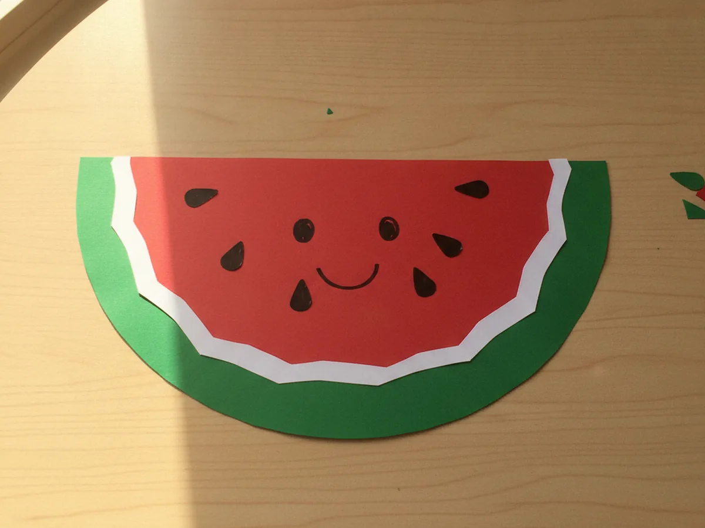
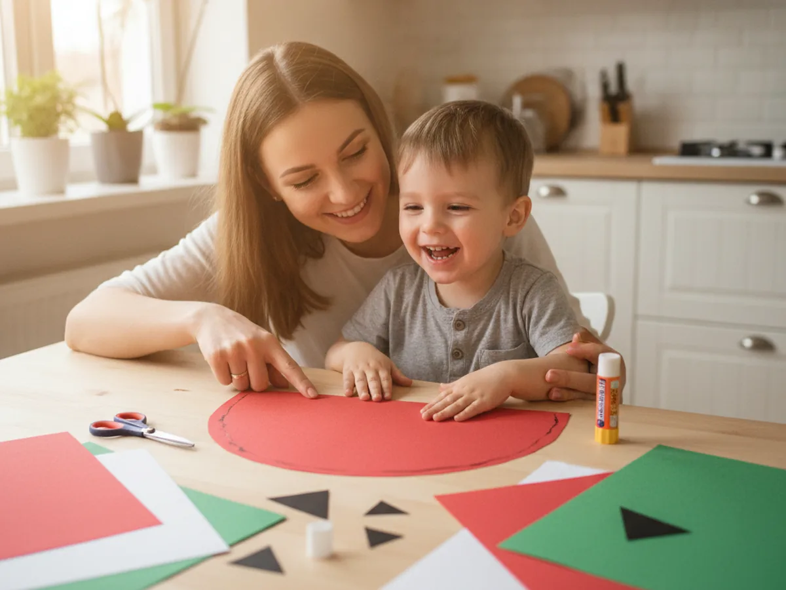
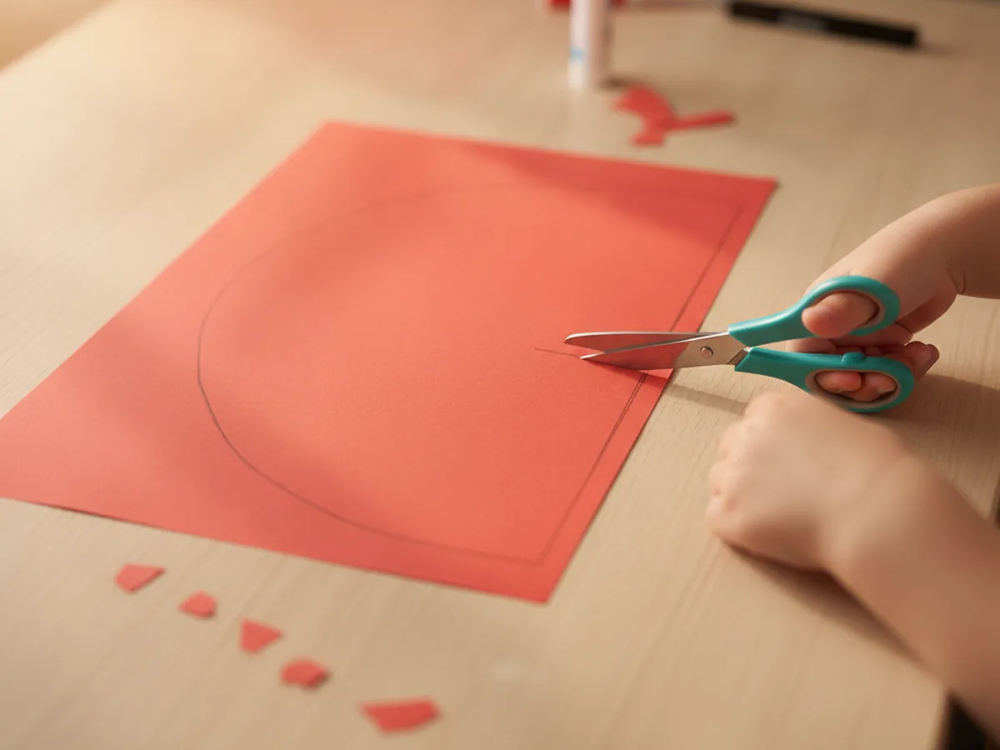
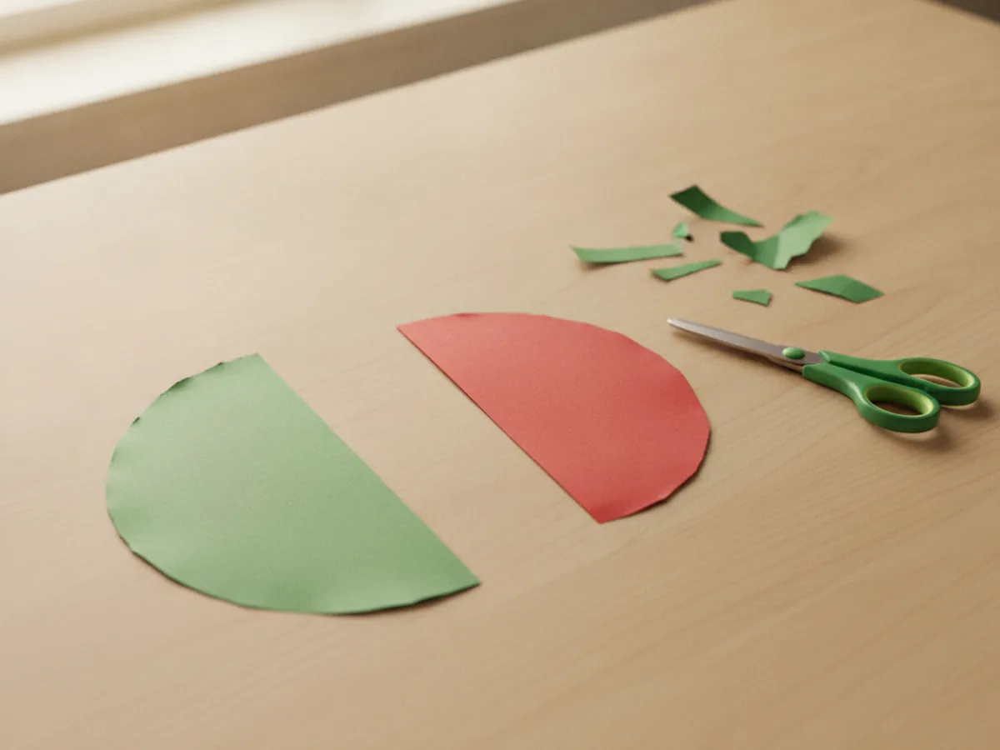
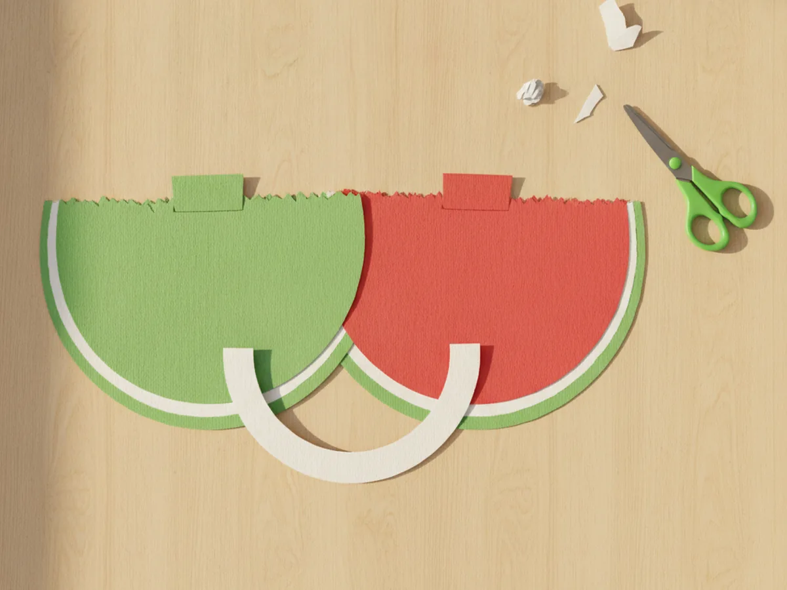
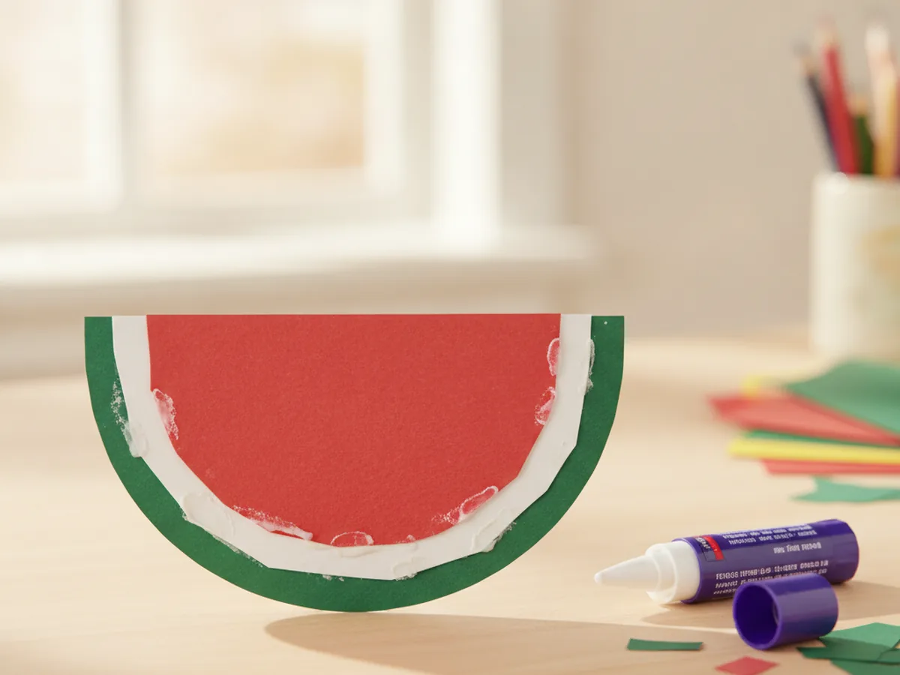
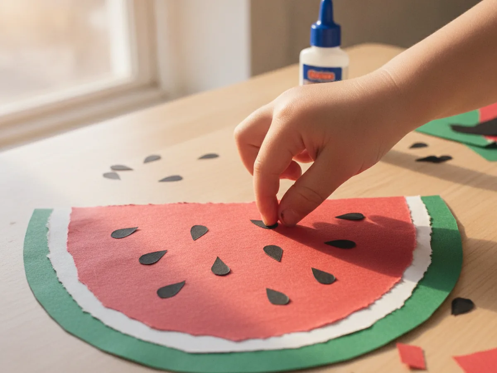
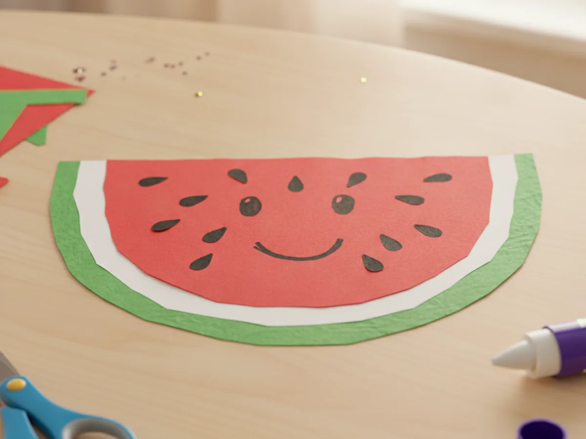

When the weather warms up, nothing feels more cheerful than a big juicy slice of watermelon, and you can bring that summery feeling indoors with paper and glue. This paper watermelon craft turns a few sheets of construction paper into a bright, smiley fruit slice your child can make in about half an hour. It uses simple shapes, just scissors and a glue stick, and ends with something cute enough to tape on the window. Grab your paper and let's make a sweet little watermelon together at the kitchen table! 🍉
Why Kids Love This Craft
Kids adore anything that looks good enough to eat, and a chunky red watermelon slice covered in little black seeds is exactly that kind of fun. They get to choose how many seeds to add, where to place them, and whether their watermelon gets a happy face, so the whole project feels like it belongs to them. That "I made this all by myself" pride is the best part of any afternoon. 😊
There is gentle learning hiding in the fun too. Cutting the big curved fruit shape builds scissor control and patience, while layering the green rind, white strip, and red middle helps little hands practice lining things up. Adding the seeds is wonderful counting practice, and you can sneak in a quick "how many seeds do you see?" without it ever feeling like a lesson.
Best of all, this paper watermelon craft is super forgiving. The shapes do not need to be neat, the seeds can go anywhere, and a slightly wobbly slice only makes it look more handmade and charming. It stays low-mess with just paper and glue, and it works for a wide range of ages. Older kids can cut every piece themselves, while a toddler can simply press the seeds down where you point, so everyone gets to join in.

What You'll Need
Here is everything you need for this easy paper watermelon craft, and most of it is probably already in your craft drawer.
- Construction paper, in red or pink, green, white, and black for the fruit, rind, and seeds.
- Colored cardstock, optional, for a sturdier slice that holds up to lots of handling.
- Washable glue sticks, for layering the rind, white strip, and red fruit together.
- Child-safe scissors, for cutting the curved watermelon shapes and seeds.
- Washable markers, for drawing seeds, a cute face, or extra details.
- A pencil, for lightly sketching the half-circle shapes before cutting.
Step-by-Step Instructions
Ready to make a slice of summer? Follow these simple steps and you will have a cheerful watermelon in no time, with a few helper tips along the way.
Step 1: Cut the Red Fruit
Start with the juicy part, since it is the heart of the whole slice. Take a sheet of red or pink construction paper and cut out a large half-circle, like a half of a round pizza. This curved shape is the watermelon flesh, so make it nice and big since the green rind will sit behind it. This first piece sets the size for your entire paper watermelon craft.

Step 2: Cut the Green Rind
Now give your watermelon its rind. Cut a green half-circle that is a little bigger than the red one so that when you stack them, a curved band of green peeks out along the rounded edge. You do not need to measure anything, just eyeball it so the green is slightly wider all around. This green rim is what instantly makes the shape read as a watermelon.

Step 3: Cut the White Rind Strip
For that classic, real-watermelon look, add a thin light layer between the red and green. Cut a slim white crescent strip that follows the same curve as your half-circles. It only needs to be about a finger wide. This little white band is the soft inner rind, and it gives your paper watermelon craft a fresh, just-sliced feel.

Step 4: Glue the Slice Together
Time to build your watermelon. Lay the green half-circle down first as the base, then glue the white crescent strip along its straight top edge. Finally, glue the red fruit on top, lining up all three straight edges so the green rim and white band show along the curve. Press each layer down firmly and smooth it out with little hands. Suddenly your paper watermelon craft looks like a real slice ready for a summer picnic.

Step 5: Add the Seeds
Here is the part kids love most. Cut a handful of small black paper teardrop shapes for the seeds, or simply let your child draw them on with a black marker. Scatter the seeds across the red fruit, spacing them out so they look natural. There is no wrong number, so let your little one add as many or as few as they like and count them together as you go.

Step 6: Add the Finishing Touches
Your slice is nearly done, so now make it yours. Glue the finished slice onto a background sheet if you want to hang it up, or leave it as a standalone slice. This is a sweet moment to add a happy face with markers, a little shine line on the rind, or even a tiny bite taken out of one side. Step back and admire the juicy paper watermelon you grew together. 🌞

Variations to Try
Whole Round Watermelon: Instead of a slice, cut a full green circle and let your child dab on darker green marker stripes, then glue a smaller red circle on top with seeds for a cut-open look. It turns the project into a fun two-in-one fruit.
Paper Plate Watermelon: Paint or cover half of a paper plate red and add a green rim around the curved edge. The sturdy plate makes a bigger, bolder slice that is great for decorating a summer party wall.
Watermelon Counting Game: Cut several small slices and write a number on each one, then have your child add that many paper or marker seeds. It quietly turns this craft into a hands-on counting activity for preschoolers.
Final Thoughts
This paper watermelon craft is one of those simple projects that gives back far more than the few supplies it takes. It is quick, low-mess, and bursting with summer color, and it brings that fresh, fruity feeling indoors on any warm afternoon. Whether you make one slice or a whole picnic spread of them, the real magic is the time spent cutting, gluing, and counting seeds together. It is the kind of easy, screen-free moment that turns into a sweet little memory, and you end up with a cheerful keepsake to enjoy long after the glue dries. 🎨
I would love to see the juicy slice your family makes. Snap a photo, hang it somewhere everyone can enjoy it, and most of all, savor this sweet moment with your little crafter. Happy crafting, friend!
More Crafts You'll Love
If your little one loved making this fruity slice, these other sweet summer treats are the perfect next project: